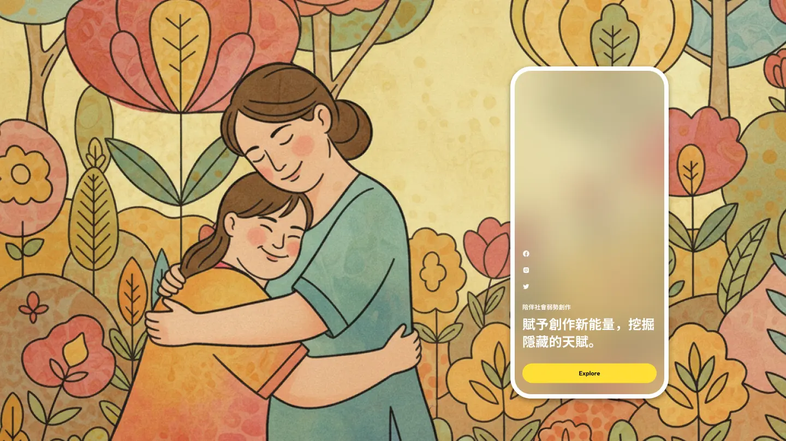
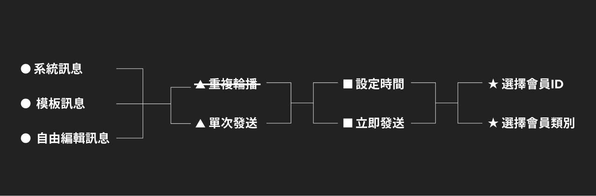
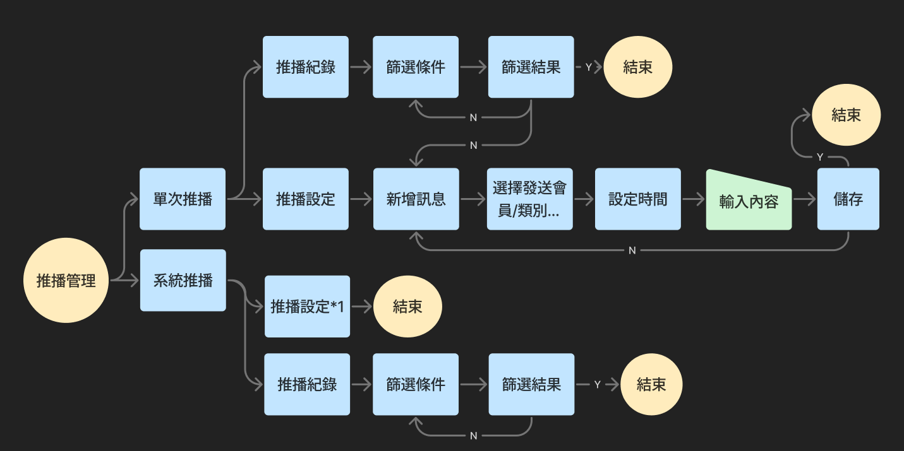
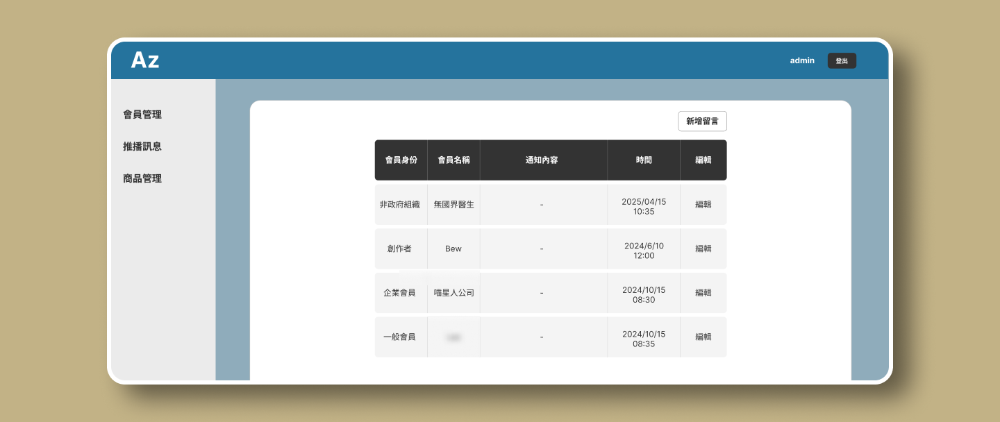
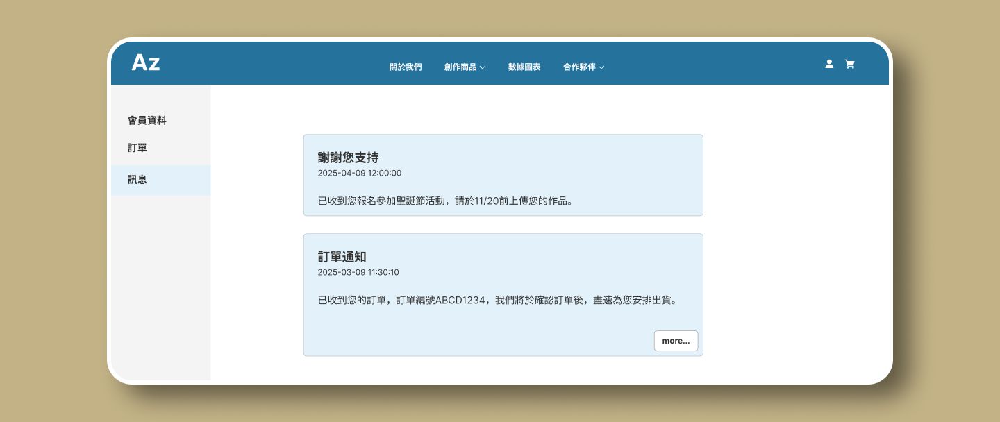

回饋社會弱勢
共創平台
結合電商與內容管理的 B2B2C 平台。我主動跨越職能邊界，重建設計系統，透過 Git 參與前端切版（HTML/CSS），透過緊密開發協作，成功將平面設計稿轉化為高互動性的響應式網頁。

RWD Web/SaaS Erp
專案背景
本專案旨在協助客戶建立具備社會研究數據、企業合作、商品販售的前台與後台內容管理系統。
由於原始設計稿由平面設計師製作，缺乏數位介面邏輯，我的主要任務是進行大幅度的數位轉化與邏輯梳理。我不僅負責 UI/UX 設計，更主動擔任設計與開發間的橋樑，透過 Git 協作直接調整前端樣式，確保產品在有限資源下能高品質落地。
我的角色與貢獻
1.
介面規劃與設計系統
-
●
從使用者情境出發定義問題，重新規劃操作流程與 RWD 版型。
-
●
建立完整的元件庫，統一跨頁面的視覺風格與互動規範。
2.
前端協作與程式碼實踐
-
●
打破設計與開發的隔閡，不依賴靜態圖，直接透過 Git 參與版本控制協作。
-
●
專注於 UI 層的前端實作：在 ASP.NET MVC 架構下，透過 Git 協作調整 .cshtml 結構與 SCSS 樣式，確保視覺還原度 100%，讓後端工程師能專注於邏輯開發。
3.
需求轉譯與專案控管
-
●
在缺乏完整規格書的情況下，主動釐清客戶模糊需求，將其轉化為可執行的開發規格，確保專案在時限內落地。
專案成員
UI/UX設計師 & Design Engineer x1 →我
全端工程師 x2
基於職業倫理，模糊處理並化名公司和專案名稱，揭示內容為已修改的虛構資料。如欲瞭解更多，歡迎透過人力網站與我聯繫。
挑戰:
視覺與開發邏輯的落差
問題背景
設計資產的適用性缺口 -
專案初期，客戶提供的設計稿是由平面設計師製作。雖然視覺美觀，但缺乏 Web 互動邏輯與 RWD 響應式規範（例如：將 App 的操作模式直接套用於 RWD 網頁）。這導致許多設計在技術上無法直接落地，甚至會造成開發端的邏輯衝突。
具體案例

案例分析:
推播訊息的認知誤區 - 客戶原本希望在 RWD 網頁上實現類似 Native App 的「懸浮氣泡推播」，並認為：「手機 App 都是這樣做的，為什麼網頁不行？」
-
核心衝突：
●
客戶預期:
手機 App 的即時覆蓋層體驗。●
技術現實:
這是基於瀏覽器的 RWD 網頁，而非原生應用程式 (Native App)。過多的懸浮遮罩會嚴重影響網頁的閱讀動線與 SEO，且操作邏輯與桌面版 (Desktop) 難以統一。
我的解決方案
-
溝通與教育 -
面對客戶的質疑，我沒有直接拒絕，而是採取了以下步驟:
1.
釐清本質:
建議保留「通知中心」的概念，但將其整合進「會員中心」的頁面流程中，確保在電腦與手機上都能有一致且流暢的體驗。2.
提出替代方案:
建議保留「通知中心」的概念，但將其整合進「會員中心」的頁面流程中，確保在電腦與手機上都能有一致且流暢的體驗。3.
結果:
客戶理解並接受了建議，專案得以從「停滯」轉向「推進」。
核心邏輯重構:
建立訊息推播矩陣
對應現實情況，解決痛點
針對原本混亂的推播需求，我引入了系統化的分類邏輯，將零散的功能收斂為四大維度，並與後端工程師對焦資料庫結構:
-
●
訊息類型:
區分「系統自動觸發」與「手動推播」▲
發送時機:
整合排程邏輯，將原本複雜的設定簡化為「立即發送」與「預約發送」兩種模式，滿足即時通知與活動預熱的需求。★
受眾分群:
支援精準 ID 選擇與標籤類別篩選。
後台 UX 優化:
在規劃階段，客戶原想加入複雜的「週期性循環發送」功能。但我經由使用者情境分析發現，此功能的使用頻率極低，卻會大幅增加系統複雜度。因此，我主動建議客戶簡化規格，專注於優化最常用的「預約排程」體驗，成功將開發資源集中在刀口上。
在後台設計上，我發現原始設計缺少「推播設定」與「歷史紀錄」，導致管理者無法編輯訊息、設定時間。我重新梳理了後台操作流程，將推播功能拆解為單次推播、系統推播兩個子功能入口，並將推播設定與歷史紀錄納入。使操作流程簡化，大幅降低了管理人員的學習門檻。
系統邏輯流程

資訊架構優化

前後對比

技術實作：
MVC 架構下的混合式交付
敏捷協作策略
由於專案時程緊迫，為避免傳統「設計圖 → 標註文件 → 前端開發 → 視覺走查 (QA)」的冗長流程，我採取了更敏捷的協作模式：
-
●
跳過高保真原型:
確認 Wireframe 與邏輯後，直接進入開發環境實作。●
前端協作:
我直接HTML切版與調整.cshtml部分結構，使設計排版具有一致性。 同時以設計系統為準則，修改Select2，這確保了從第三方套件到客製化元件，視覺還原度皆能達到 100%。●
Git 版本控制:
透過 Git 分支管理，我能與後端工程師同步並行工作。工程師專注於資料邏輯，我專注於介面呈現 (View)，消除了實作落差。
前端架構實作
我負責全站的 HTML 結構與 CSS 樣式撰寫。在不依賴前端框架 (如 Bootstrap) 的情況下，透過 SCSS 建立模組化樣式，並直接在 ASP.NET MVC Views 中進行整合，確保程式碼輕量且高可維護性。
Git協作

前後對比

設計驗證
與快速迭代
用戶回饋循環
在專案後期的驗收階段 (UAT)，客戶提出對於「訊息列表」的體驗疑慮：原本為了介面簡潔而設計的「展開/收合」功能，對於目標年齡層較高的用戶來說，反而增加了操作成本。客戶希望能預設展開所有內容，提升資訊易讀性。
技術優勢展現
-
如果按照傳統流程，這需要「修改設計稿 → 更新標註 → 前端重切」。
但由於我直接掌握前端樣式，我能夠立即在程式碼層級進行調整：
1.
移除收合互動邏輯 (JavaScript)。
2.
調整 CSS Layout，優化長文本的閱讀間距。
3.
結果:
在收到回饋的當天即完成修正並推上測試站。這證明了設計師具備前端能力，能大幅提升產品面對需求變更時的韌性。
前後對比

專案成果與反思
本專案成功在緊迫的時程內，協助客戶將模糊的需求轉化為功能完整的 B2B2C 平台。對我個人而言，這是一次跨領域能力的總驗收：
-
●
從「美工切版」到「產品設計師」：
成功引導客戶跳脫平面思維，建立符合 Web 規範的響應式體驗與 Design System。●
打破職能邊界:
透過直接參與 MVC 架構的 View 層開發，我驗證了「設計工程師 (Design Engineer)」的價值——減少溝通耗損，提升交付品質。●
建立信任:
以 Git 與程式碼作為共通語言，贏得了工程團隊的高度信任。這段經驗讓我深信，一位優秀的 UI/UX 設計師，應當是理解技術邊界、並能與開發者並肩作戰的夥伴。